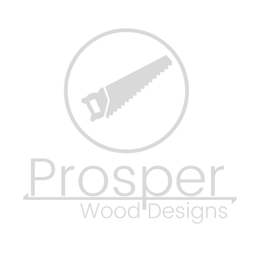

<!-- navbar-dark.html
Michael Cole

Dark version of the navbar to be used on pages where the navbar is not opaque -->

<nav class="navbar navbar-dark {% if title!='Home' and title!='About' %}bg-dark{% endif %} navbar-expand-md">

    <!-- Brand Logo - aligned-left -->
    <a href="/" class="navbar-brand">
        
    </a>
    <button class="navbar-toggler" type="button" data-toggle="collapse" data-target="#navbarSupportedContent" aria-controls="navbarSupportedContent"
            aria-expanded="false" aria-label="Toggle navigation">
        <span class="navbar-toggler-icon"></span>
    </button>

    <!-- Links - aligned-right -->
    <div class="collapse navbar-collapse justify-content-end" id="navbarSupportedContent">
        <ul class="navbar-nav ml-auto text-right">
            <li class="nav-item
                {% if title=='Home' %}active{% endif %}"> 
                <a href="/" class="nav-link">Home</a>
            </li>
            <!-- ABOUT PAGE CURRENTLY TABLED PENDING CLIENT'S THOUGHTS -->
            <!-- <li class="nav-item
                {% if title=='About' %}active{% endif %}">
                <a href="/about" class="nav-link">About</a>
            </li> -->
            <li class="nav-item
                {% if title=='Designs' %}active{% endif %}">
                <a href="/designs" class="nav-link">Designs</a>
            </li>
            <li class="nav-item
                {% if title=='Request Form' %}active{% endif %}">
                <a href="/request" class="nav-link">Request Form</a>
            </li>
        </ul>
    </div>

</nav>